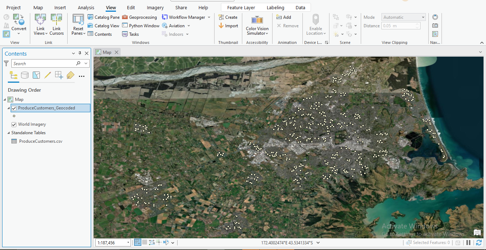

Project Description:
As part of my learning in the "GIS for Climate Action" course by ESRI, I conducted network analysis to optimize vehicle routes for reducing greenhouse gas emissions.
Data and Tools:
- Customers order data (provided as part of the exercise).
- GIS Software (ArcGIS Pro).
- Network Analysis tools.
Key Highlights:
- 1. Extracted location data using the ArcGIS geocoding tool.

- 2. Utilized a vehicle routing problem (VRP) layer, defining depots and orders, and adding routing details.
- 3. Constraints: Although the analysis was halted at the end due to limit crossing restrictions, I gained practical experience in network analysis.
Key Learning:
- GIS Skills: I gained valuable experience with GIS tools and network analysis.